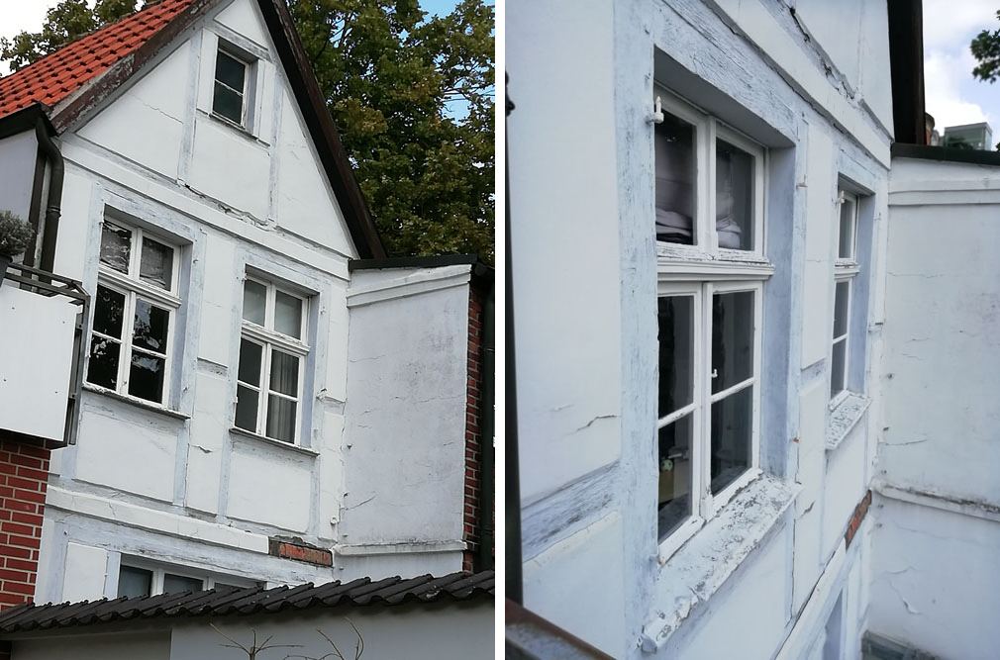
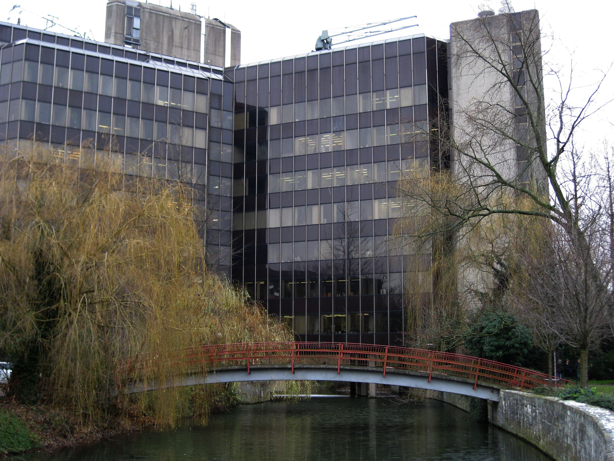

In dieser Reihe möchten die Rathausfreunde einmal aufzeigen wo in Ahlen städtische Liegenschaften
absolut heruntergekommen sind und über Jahre nicht saniert werden. Hier ein Beispiel: „Kirchplatz 6 von der
Rückseite“. Aber man will einen Bürgercampus für einen dreistelligen Millionenbetrag bauen. Dieser wird in
einigen Jahren genau so verwahrlost sein.
Wo ist dann noch Geld für Sanierungsarbeiten?
Unser bestehendes Rathaus kann für einen wesentlich geringeren Betrag saniert werden. Wir haben mit namhaften Architekten darüber gesprochen, die uns einen Betrag von maximal 30 Millionen Euro bestätigten. Aber man will nicht sanieren, lieber abreißen und einen grauenhaften Betonklotz mit billiger Eternit-Fassade neu bauen. Das ist eine Frechheit und eine Verschwendungssucht sondergleichen. Die im Stadtrat vertretenen Parteien aus CDU, SPD und FDP forcieren diese Schweinerei auch noch. Die heutige Zeit ist wohl an Bürgermeister, Baurat und Stadtrat vorbeigegangen. Von Nachhaltigkeit und Umweltschutz haben diese Herrschaften wohl noch nichts gehört. Auch möchten wir die Ratsmitglieder an den § 43 GO NRW – Rechte und Pflichten erinnern.

Auch ein Relikt der Vergangenheit, die Bäreninsel. Sie wurde damals schon grundlos gegen den Willen der Ahlener Bevölkerung unnötiger weise abgerissen. Dann die Piusbrücke und nun soll das Rathaus weichen.
